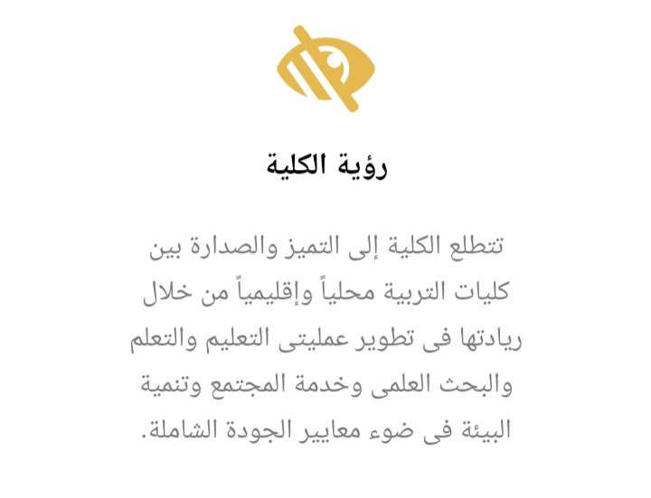
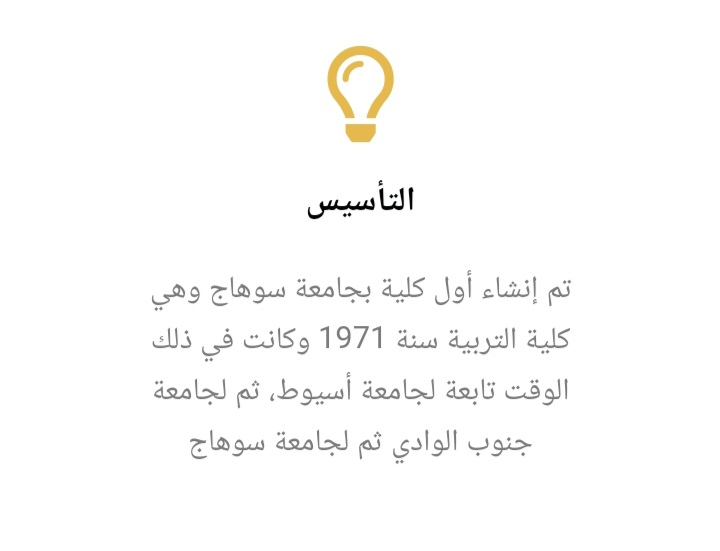

كلية_التربية
The Faculty Of Education
تاريخ كليه التربيه:-
ترجع بداية تلك الكلية في مصر؛ لعام 1929 عندما تم إنشاء معهد التربية العالي للمعلمين؛ بهدف إعدادهم لمدارس التعليم العام، والعمل على أن يكون هذا المعهد مركزًا للبحث العلمي في ما يتعلق بالتربية والتعليم، والدراسة النفسية للأطفال، بجانب أن يكون أداة لنشر الأفكار الحديثة عن التربية بين رجال التعليم في مصر.
وفي سبتمبر 1956؛ صدر قانون خاص بتنظيم الجامعات المصرية ليصدر بعدها بشهرًا واحدًا فقط قرار جمهوري يعتبر كلية التربية إحدى الكليات التابعة لجامعة عين شمس، ليتم ضم كلية المعلمين إلى كلية التربية بجامعة عين شمس في 1970، ليبدأ من تلك اللحظة إنشاء معظم كليات التربية بالجامعات المصرية.
|  |  |

|
محتويات كليه التربيه
الدور الاول :-
- الشؤون
( في حاله الاستفسارات او احتياج أوراق) .
- رعايه الشباب
( في حاله الاستفسارات )
- الخزنة
( في حاله المعاملات الماديه)
- لصاله الرياضيه
- مدرج (أ)
المدرجات والقاعات والفصول بشكل عام تستخدم في المحاضرات والسكاشن .
- قاعه بسيوني
الدور الثاني:-
- مكتب العميد
- مكتب ضمان الجودة وبعض .
- مكاتب الدكاتره .
- وحده ال IT
الدور الثالث :-
- مدرج (ب)
- جزء من الفصول
- جزء من مكاتب الدكاتره
الدور الرابع :-
- مصليه البنات
- جزء من القاعات
- جزء من مكاتب الدكاتره
- جزء من الفصول
- معمل الموسيقى
الدور الخامس:-
- يوجد به مدرج ( ج ) ومقر الاتحاد ( وهذا هتتوجهوا اليه في الجامعه لان لو اي احد عنده مشكله يتوجه إلى مقرالاتحاد )
- باقي مكاتب الدكاترة.
- باقي الفصول .
- قاعه تدريب 1 وقاعه تدريب 2 .
- قاعه 5 و قاعه 6 .
⬅️يوجد اسانسير في الكليه ولكنه خاص باعضاء هيئه التدريس والعاملين ليس للطلبه
دور كليه التربيه في المجتمع
- عداد الممارس التربوي المتميز وتطويره المهني المستمر.
- تقديم برامج دراسات عليا متميزة.
- إجراء بحوث تربوية تقود التطوير الوطني، وتثري المعرفة الإنسانية.
- ناء شراكات مجتمعية مؤثرة تسهم في التنمية المستدامة
ان هدف التربيه الأسمى هوتنميه افضل لقدرات الفرد وسماته الشخصيه وقيمه الخلقيه والدينيه على اساس توفير واحترام الإنسان اخذا في الاعتبار معايير التكاملية والشموليه والذكاء والابتكاريه والدوليه والعالميه بما يتيح للفرد فكرا مستقلا ينتج عملا فعالا في تعاون مثمر مع أبناء وطنه لصالح المجتمع .
الحياه الجامعيه
الدراسه الجامعيه او المرحله الجامعيه Undergraduate Education مصطلح يشير إلى مرحلة التعليم العالي الجامعي حتى الحصول على درجة البكالوريوس او الليسانس .
أهميتها :-
- الوصول إلى مرحله الدراسات العليا واستكمال الدراسه
- تؤهل الطالب لسوق العمل وشغل المهن والمناصب بمختلف مستوياتها .
كيفيه التعامل في الحياه الجامعيه ؟!
الجامعه هي بدايه جديده حياه جديده لكل من أراد أن يبدأ وفرصه لمن أراد حياه افضل لذلك يجب استغلالها وهناك عده نصائح لبدايه الحياه الجامعيه وتجنب الوقوع في الخطأ .
- احترام الحرم الجامعي
- وضع هدف والاستفادة من الماضي
- وضع حدود لردود الأفعال والتصرفات وتذكر اننا وجهه لعائله كامله ( اجعل من يراك يدعو لمن رباك )
- حسن اختيار الرفاق
- حضور المحاضرات والسكاشن
- تقسيم الوقت و المذاكرة والجد والاجتهاد وتذكر جيدا ان الهدف من الذهاب للجامعه هو التعلم
- بناء علاقات اجتماعيه جيده مع الاصدقاء
- التعامل بطريقه لائقه مع أعضاء هيئة التدريس وجميع العاملين بالجامعة
- تجنب الوقوع في الخطأ و التعلم من أخطاء الغير
هناك أيضا بعض المصطلحات الغريبه سنستمع اليها في الجامعه وهي
- مدرج بمعنى فصل كبير
- قاعه اقل حجما من المدرج
- فصل نفسه فصل المدرسه
- بينش بمعنى مقعد ( تخته كبيرة )
- كافتيريا بمعنى مكان لبيع الطعام (كانتين)
- محاضره بمعنى حصه كبيرة
- سكشن اقل وقت من المحاضرة
- دكتور / محاضر = مدرس في المدرسه
أول يوم جامعه
- معرفه الجدول
- يجب أخذ ( مال _ الموبايل _ دفتر _ قلم و جميع المتعلقات الشخصيه )
- محاوله التعرف على أماكن جديده في الجامعه
يجب أن نتذكر أن الخيرة فيما اختاره الله بمعنى اي كان سبب الدخول للكليه ( سواء مجموع ، رضا والدين ، .........)
رب الخير لا يأتي إلا بالخير لذلك يجب علينا بذل أقصى جهدنا في مرحله الحياه الجامعيه ونتذكر دائما
( إنا لا نضيع اجر من احسن عملا)
مجالات العمل
ماذا يمكن لخريجي كليات التربية العمل غير التعليم؟
- كتابة المحتوى والتأليف (Content Authoring): هوالخيار الأول والأبسط لأي تربوي
- انظمة إدارة التعلّم(Learning Management Systems): تشتهر بإسم LMS وهي منصات رقمية على الإنترنت تحوي أدوات ولوازم إنشاء المواد والموارد التعليمية وإدارتها فتسمح للمعلم بتصميم و نشر المادة وملحقاتها وللمتعلم بالمولوج والإطلاع للدرس والتفاعل عن بعد.
- التصميم و التطويرالتعليمي (Instructional Design and Development): هو نوع من أنواع تصميم المحتوى الرقمي. ومن المهم جدا هنا التفريق بين التصميم والإنتاج. وهو من أهم الإختصاصات التي يزداد الطلب الوظيفي عليها. يتطلب هذا الإختصاص تربويين مع كفاءة في استخدام برامج وتطبيقات التصميم. كما يتطلب معرفة بمبادئ التصميم التعليمي ونظرياته المختلفة.
- إنتاج الموارد والوسائط المتعددة التعليمية (Multimedia Production ): إنتاج الوسائط المتعددة ليس تربويا بحد ذاته، لكن التربوي الذي يدعم اختصاصه بدورات تدريبية على الإنتاج الرقمي للوسائط المتعددة.
- إدارة المشاريع (Project Management): هذا الإختصاص هو من الإختصاصات اللامعة والنامية بشكل سريع عالميا
اما في مجال التعليم يعمل معلم على حسب تخصصه .

يدرس الطلاب فى الشعب الدراسية التالية:
معلم التعليم الإعدادي والثانوي (عام) :
- شعبة اللغة العربية
- شعبة اللغة الإنجليزية
- شعبة اللغة الفرنسية
- شعبة اللغة الألمانية
- شعبة التاريخ
- شعبة الجغرافيا
- شعبة علم النفس
- شعبة الفلسفة والاجتماع
- شعبة الرياضيات
- شعبة الكيمياء
- شعبة الفيزياء
- شعبة بيولوجي أساسي/جيولوجي فرعي
- شعبة جيولوجي أساسي/ بيولوجي فرعي
- شعبة التعليم التجاري
التعليم الأساسي (الحلقة الأولى) ومعلم الطفولة :
- شعبة اللغة العربية – تعليم أساسي (الحلقة الأولى)
- شعبة اللغة الإنجليزية – تعليم أساسي (الحلقة الأولى)
- شعبة الدراسات الاجتماعية – تعليم أساسي (الحلقة الأولى)
- شعبة الرياضيات – تعليم أساسي (الحلقة الأولى)
- شعبة العلوم – تعليم أساسي (الحلقة الأولى)
- شعبة الطفولة